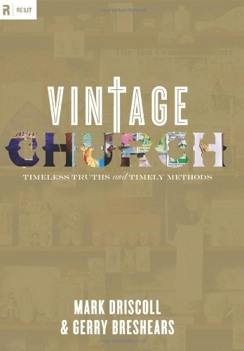

|
|  |
Vintage Church: Timeless Truths and Timely Methods
|
Mark Driscoll, Gerry Breshears
|
Crossway Books |
336
pages |
Ben's Library
|
Defines a biblical church as one that properly balances the eternal truths of Scripture with timely, relevant methods designed to engage the culture.
The book in the popular Re:Lit series picks up where Vintage Jesus leaves off, beginning with a focus on the person and work of Jesus and then exploring the confessional, experiential, and missional aspects of his church. This study grows out of the vintage concept of taking timeless truths from Scripture-truths about church leadership, preaching, baptism, communion, and more-and blending them with aspects of contemporary culture, such as multi-campus churches and the latest forms of technology, to reach people with the gospel.
While Vintage Church is helpful for pastors and church leaders, it is the kind of book you could hand to someone who has questions about ecclesiology but finds the very term ecclesiology intimidating. The authors put forth twelve practical questions about church doctrine and answer them in clear, biblical language that lay people and new believers can understand.
|
|
|
|